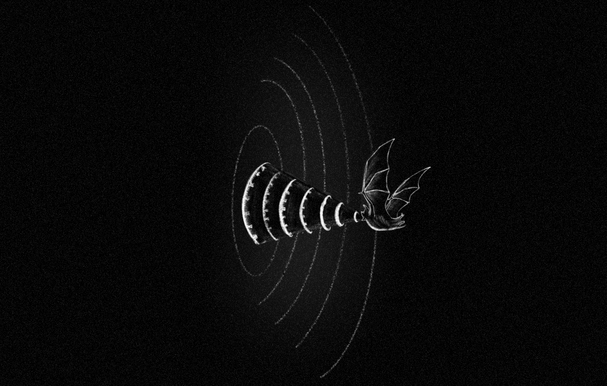
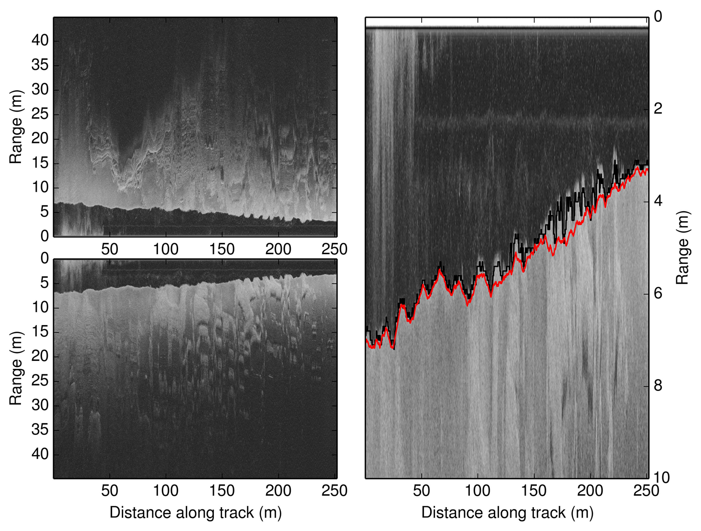
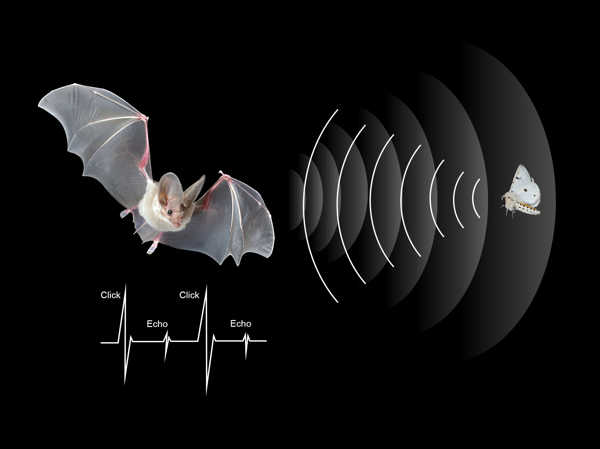
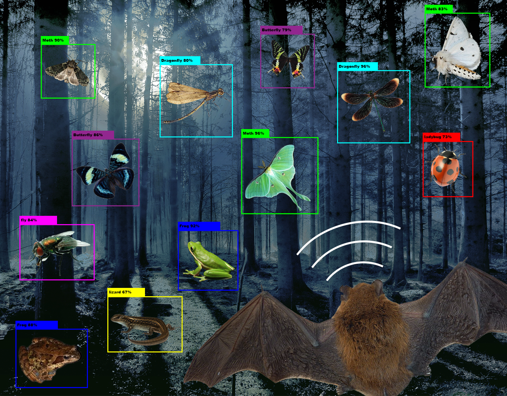
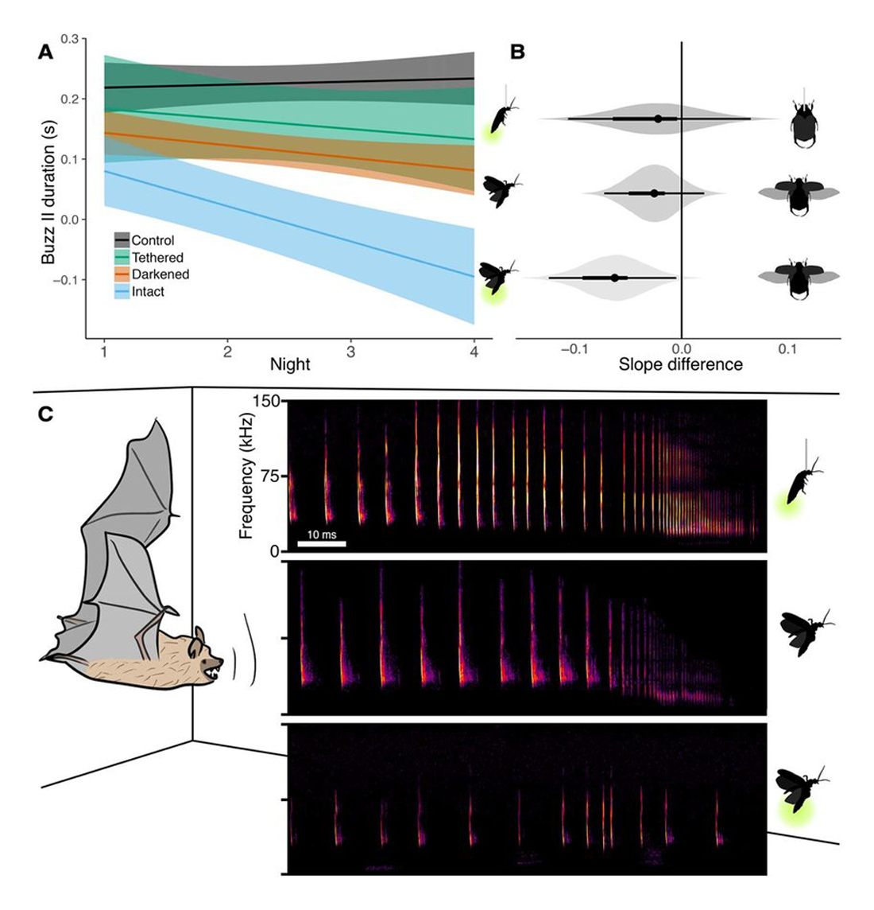

Seeing
the world WITHOUT EYES
the world WITHOUT EYES

Chapter 1. Introduction
Explore the fascinating world of bat echolocation: a sophisticated system enabling navigation and hunting in darkness. By emitting high-frequency sound waves and analyzing returning echoes, bats construct detailed maps of their surroundings, detect objects, and identify prey with precision. Understanding bat echolocation offers insights into advanced detection and navigation principles, bridging natural processes with modern technology. Delve into how bats emit, receive, and interpret sound waves to create dynamic environmental representations, revealing nature's influence on technological advancement.
Chapter 2: Bat's Sonar
Explore the fascinating world of bat echolocation: a sophisticated system enabling navigation and hunting in darkness. By emitting high-frequency sound waves and analyzing returning echoes, bats construct detailed maps of their surroundings, detect objects, and identify prey with precision. Understanding bat echolocation offers insights into advanced detection and navigation principles, bridging natural processes with modern technology. Delve into how bats emit, receive, and interpret sound waves to create dynamic environmental representations, revealing nature's influence on technological advancement.

Explore the fascinating world of bat echolocation: a sophisticated system enabling navigation and hunting in darkness. By emitting high-frequency sound waves and analyzing returning echoes, bats construct detailed maps of their surroundings, detect objects, and identify prey with precision. Understanding bat echolocation offers insights into advanced detection and navigation principles, bridging natural processes with modern technology. Delve into how bats emit, receive, and interpret sound waves to create dynamic environmental representations, revealing nature's influence on technological advancement.

Explore the fascinating world of bat echolocation: a sophisticated system enabling navigation and hunting in darkness. By emitting high-frequency sound waves and analyzing returning echoes, bats construct detailed maps of their surroundings, detect objects, and identify prey with precision. Understanding bat echolocation offers insights into advanced detection and navigation principles, bridging natural processes with modern technology. Delve into how bats emit, receive, and interpret sound waves to create dynamic environmental representations, revealing nature's influence on technological advancement.
Chapter 3: Bat's Environmental Perception
Bats navigate and hunt in complete darkness using a sophisticated system known as echolocation. This chapter delves into the remarkable mechanisms by which bats detect objects, process echo information, and create dynamic 3D maps of their surroundings, providing a fascinating insight into their survival strategies.

Chapter 3.1: How Bats Detect Objects
Echolocation allows bats to detect the presence and location of objects with remarkable precision. Bats emit high-frequency sound waves that travel through the air until they hit an object and bounce back. The returning echoes are received by the bat’s highly sensitive ears, enabling them to detect obstacles in their flight path. This ability ensures safe navigation, avoiding collisions with trees, walls, or other bats.
Moreover, bats can pinpoint the exact location of their prey, such as insects, by analyzing the time it takes for the echoes to return. They can also detect the size and movement of the prey, allowing for accurate targeting. For instance, a bat can distinguish between a small moth and a larger beetle based on the strength and pattern of the echo. Additionally, the quality of the echo can provide information about the texture and material of an object. Bats can discern if a surface is smooth, like water, or rough, like tree bark, helping them determine whether an area is safe to land on or if it contains potential food sources.
Bats also utilize the intensity of the echoes to gauge the distance and dimensions of objects. A stronger, broader echo indicates a larger object, while a weaker, narrower one suggests a smaller object. This capability allows bats to differentiate between various elements in their environment, ensuring they can navigate and hunt efficiently.
This sophisticated detection system allows bats to thrive in various environments, from dense forests to open spaces, ensuring they can navigate and hunt effectively in complete darkness. Through echolocation, bats maintain an acute awareness of their surroundings, adapting seamlessly to different terrains and conditions.
Moreover, bats can pinpoint the exact location of their prey, such as insects, by analyzing the time it takes for the echoes to return. They can also detect the size and movement of the prey, allowing for accurate targeting. For instance, a bat can distinguish between a small moth and a larger beetle based on the strength and pattern of the echo. Additionally, the quality of the echo can provide information about the texture and material of an object. Bats can discern if a surface is smooth, like water, or rough, like tree bark, helping them determine whether an area is safe to land on or if it contains potential food sources.
Bats also utilize the intensity of the echoes to gauge the distance and dimensions of objects. A stronger, broader echo indicates a larger object, while a weaker, narrower one suggests a smaller object. This capability allows bats to differentiate between various elements in their environment, ensuring they can navigate and hunt efficiently.
This sophisticated detection system allows bats to thrive in various environments, from dense forests to open spaces, ensuring they can navigate and hunt effectively in complete darkness. Through echolocation, bats maintain an acute awareness of their surroundings, adapting seamlessly to different terrains and conditions.
Chapter 3.2: Processing Echo Information
The bat's brain processes the reflected sound waves to analyze the size, distance, and direction of objects, a complex analysis crucial for their survival and hunting efficiency. This section delves into the intricate processes that allow bats to convert raw echo data into actionable information.
When a bat emits a sound wave, it waits for the echo to return. The time taken for this return, known as the time delay, is fundamental in determining the distance to the object. By calculating the time it takes for the sound wave to travel to an object and back, bats can gauge how far away the object is. This process is akin to measuring the length of a journey; the longer the delay, the further away the object.
Size estimation is another critical aspect of echo processing. The intensity and spread of the returning echo provide clues about the size of an object. A larger object will reflect a stronger and broader echo, while a smaller object produces a weaker and narrower one. This ability helps bats differentiate between a tree and a leaf or between a large predator and a small insect.
The Doppler effect plays a vital role in understanding an object's movement. As a bat flies, it can detect changes in the frequency of the returning echoes. If the frequency of the echo increases, it means the object is moving closer to the bat. Conversely, if the frequency decreases, the object is moving away. This effect allows bats to determine both the speed and direction of moving objects, which is essential for hunting agile prey.
Processing echoes involves a sophisticated form of analysis where the bat's brain must quickly and accurately interpret a vast amount of information. The bat's auditory cortex is highly specialized, enabling it to perform complex computations almost instantaneously. This rapid processing is crucial for survival, as it allows the bat to react swiftly to environmental changes and potential threats.
To fully understand this, consider the formula:
When a bat emits a sound wave, it waits for the echo to return. The time taken for this return, known as the time delay, is fundamental in determining the distance to the object. By calculating the time it takes for the sound wave to travel to an object and back, bats can gauge how far away the object is. This process is akin to measuring the length of a journey; the longer the delay, the further away the object.
Size estimation is another critical aspect of echo processing. The intensity and spread of the returning echo provide clues about the size of an object. A larger object will reflect a stronger and broader echo, while a smaller object produces a weaker and narrower one. This ability helps bats differentiate between a tree and a leaf or between a large predator and a small insect.
The Doppler effect plays a vital role in understanding an object's movement. As a bat flies, it can detect changes in the frequency of the returning echoes. If the frequency of the echo increases, it means the object is moving closer to the bat. Conversely, if the frequency decreases, the object is moving away. This effect allows bats to determine both the speed and direction of moving objects, which is essential for hunting agile prey.
Processing echoes involves a sophisticated form of analysis where the bat's brain must quickly and accurately interpret a vast amount of information. The bat's auditory cortex is highly specialized, enabling it to perform complex computations almost instantaneously. This rapid processing is crucial for survival, as it allows the bat to react swiftly to environmental changes and potential threats.
To fully understand this, consider the formula:
Object Classification + Object Localization = Object Detection.
First, the bat identifies what is around it by analyzing the returning echoes (object classification). For example, it determines if the echo corresponds to a tree, an insect, or another bat. This step involves recognizing the general shape and characteristics of the object.
Next, the bat determines the exact location of these objects (object localization). This step involves pinpointing the precise position of the object in space, based on the time delay and intensity of the echoes. By combining these two processes, bats achieve object detection, enabling them to navigate their environment and locate prey with exceptional accuracy.
Bats’ brains are not just passive receivers of information; they actively predict and interpret data. For example, if a bat is flying towards a cluster of leaves, its brain predicts the expected echo patterns and compares them with the actual echoes received. This predictive mechanism enhances the bat's ability to detect and avoid obstacles or capture prey.
In essence, the bat's echolocation system is a marvel of natural engineering, combining high-frequency sound production, sensitive echo reception, and advanced neural processing to create a detailed, real-time understanding of the environment. This system allows bats to thrive in complete darkness, navigating complex environments and efficiently hunting for food.
Next, the bat determines the exact location of these objects (object localization). This step involves pinpointing the precise position of the object in space, based on the time delay and intensity of the echoes. By combining these two processes, bats achieve object detection, enabling them to navigate their environment and locate prey with exceptional accuracy.
Bats’ brains are not just passive receivers of information; they actively predict and interpret data. For example, if a bat is flying towards a cluster of leaves, its brain predicts the expected echo patterns and compares them with the actual echoes received. This predictive mechanism enhances the bat's ability to detect and avoid obstacles or capture prey.
In essence, the bat's echolocation system is a marvel of natural engineering, combining high-frequency sound production, sensitive echo reception, and advanced neural processing to create a detailed, real-time understanding of the environment. This system allows bats to thrive in complete darkness, navigating complex environments and efficiently hunting for food.


Chapter 3.3: Creating a 3D Map
Through constant echolocation, bats construct a dynamic 3D map of their environment, a process essential for their navigation and hunting. This 3D map provides bats with a comprehensive understanding of their surroundings. By integrating multiple echoes from different directions, bats form a detailed spatial map that includes the positions of trees, rocks, water bodies, and potential prey or predators.
This continuous mapping allows bats to navigate through tight spaces, avoid obstacles, and find roosting sites with incredible precision. The ability to visualize their surroundings in three dimensions enables bats to fly swiftly and accurately even in complete darkness. When flying through dense forests or caves, bats can manoeuvre through narrow passages and around obstacles without crashing, thanks to their 3D maps.
The echolocation process allows for real-time updates to the bat's internal map, ensuring accurate navigation. As bats fly, they constantly emit sound waves and receive echoes, continuously refining their 3D map. This ongoing process helps bats adapt to changing environments, such as moving through a crowded area or following a fleeing insect. By maintaining an up-to-date spatial map, bats can respond quickly to new challenges and opportunities in their environment.
Moreover, the dynamic nature of the bat's 3D mapping system means that it can adjust to both static and dynamic objects. Static objects, such as trees and rocks, are mapped once and provide consistent reference points. In contrast, dynamic objects, such as other bats, prey, and potential predators, require constant tracking and updating. This dual capability ensures that bats can navigate effectively whether they are foraging for food, avoiding predators, or finding their way back to a roost.
The bat's ability to create and maintain a detailed 3D map of its environment is a critical adaptation that supports its survival and efficiency as a nocturnal predator. This advanced spatial awareness allows bats to excel in navigating their complex habitats, ensuring they can hunt effectively, avoid dangers, and thrive in their ecological niches.
This continuous mapping allows bats to navigate through tight spaces, avoid obstacles, and find roosting sites with incredible precision. The ability to visualize their surroundings in three dimensions enables bats to fly swiftly and accurately even in complete darkness. When flying through dense forests or caves, bats can manoeuvre through narrow passages and around obstacles without crashing, thanks to their 3D maps.
The echolocation process allows for real-time updates to the bat's internal map, ensuring accurate navigation. As bats fly, they constantly emit sound waves and receive echoes, continuously refining their 3D map. This ongoing process helps bats adapt to changing environments, such as moving through a crowded area or following a fleeing insect. By maintaining an up-to-date spatial map, bats can respond quickly to new challenges and opportunities in their environment.
Moreover, the dynamic nature of the bat's 3D mapping system means that it can adjust to both static and dynamic objects. Static objects, such as trees and rocks, are mapped once and provide consistent reference points. In contrast, dynamic objects, such as other bats, prey, and potential predators, require constant tracking and updating. This dual capability ensures that bats can navigate effectively whether they are foraging for food, avoiding predators, or finding their way back to a roost.
The bat's ability to create and maintain a detailed 3D map of its environment is a critical adaptation that supports its survival and efficiency as a nocturnal predator. This advanced spatial awareness allows bats to excel in navigating their complex habitats, ensuring they can hunt effectively, avoid dangers, and thrive in their ecological niches.